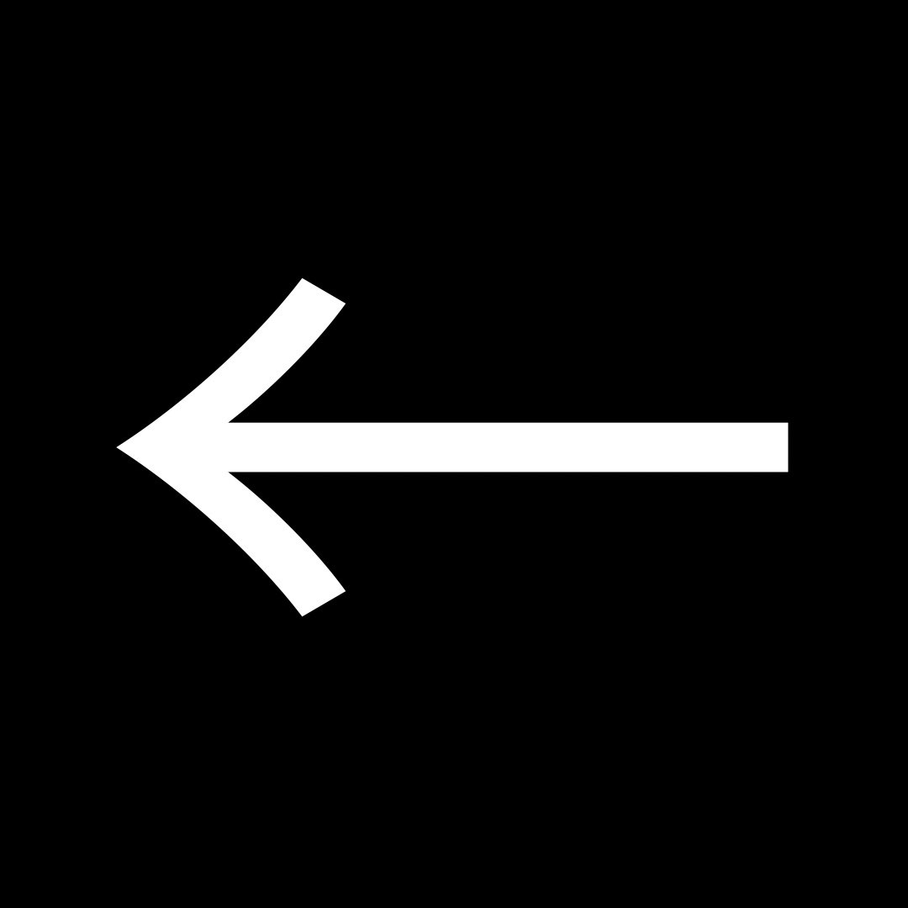

|
Mais pourquoi l'Europe
fait-elle décoller ses satellites
Galileo avec SpaceX ?
|
|
|
28 satellite ont été envoyées entre 2011 et 2021 et aujourd'hui, 23 satellite sont encore actif.
Cependant, les satellites doivent être changés tous les dix ans.
Habituellement, l'Europe faisait appel à des fusées de lancement comme
Ariane 5 (qui a stoppé son activité à cause de coûts trop élevés) ou bien
Soyouz ST (arrêté à cause des invasions de la Russie en Ukraine ) parce que leurs
bases de lancement se situait en Guyane.
En premier lieu, Galileo avait été conçu pour ne dépendre d'aucun autre pays mais avec
la situation actuelle, l'Europe n'a pas eu d'autre choix que de faire appel à Space X.
|